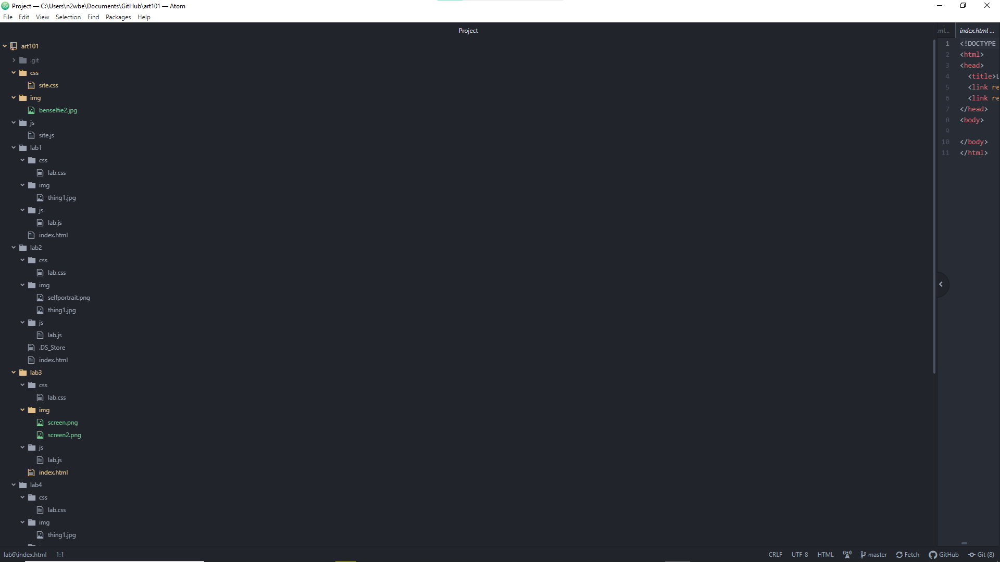
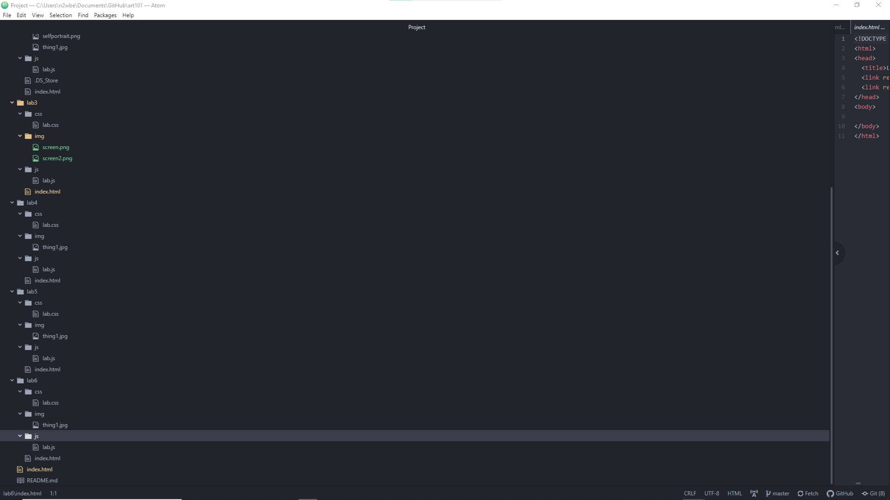
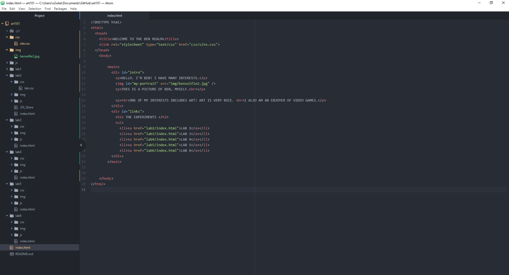
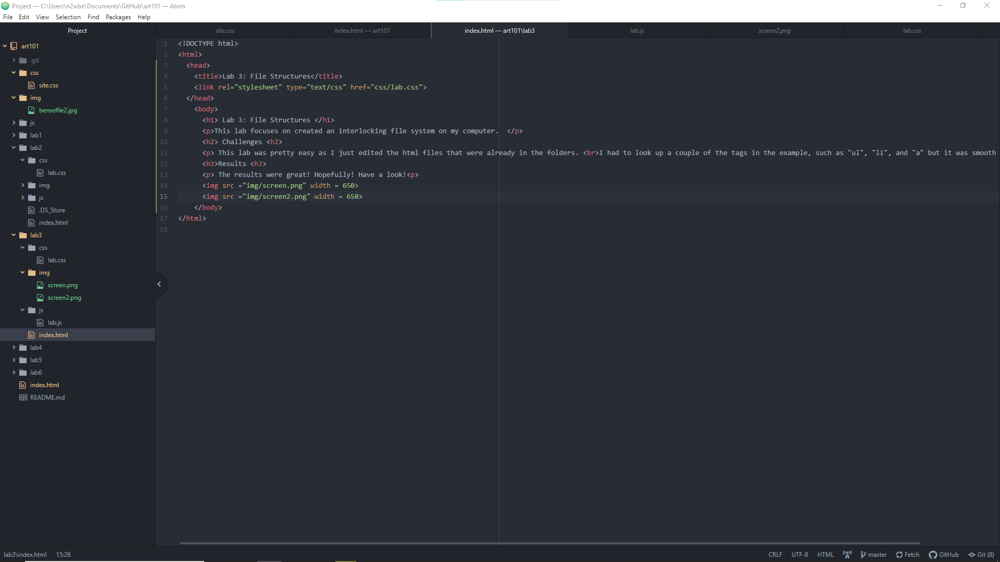
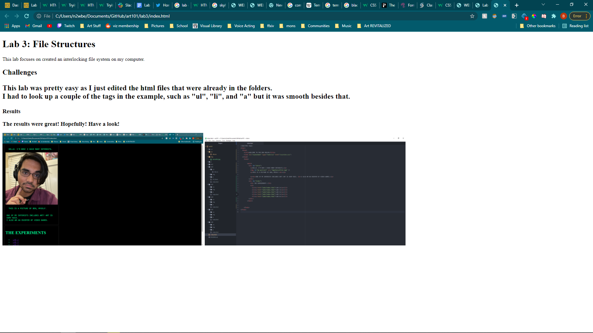

This lab focuses on created an interlocking file system on my computer.
This lab was pretty easy as I just edited the html files that were already in the folders.
I had to look up a couple of the tags in the example, such as "ul", "li", and "a" but it was smooth besides that.
The results were great! Hopefully! Have a look!
 
A picture of my index file for the original ARTG101 folder in browser.
A picture of my code for index file for the original ARTG101 folder in Atom.
A picture of my code for index file for the lab3 folder in Atom.
A picture of my index file for the lab3 folder in browser.